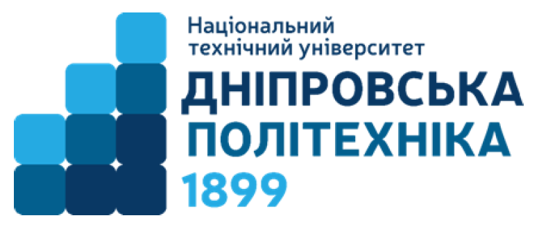

Міністерство
науки і освіти України

Звіт з лабораторної роботи №2
З дисципліни «Web-технології та web-дизайн»
Використання CSS для кастомізації інтерфейсу користувача
Виконав студент групи 123-20-1
Яковлєв Ярослав Юрійович
Перевірив
Доц. Сущевський Д.В.
м.
Дніпро
2021 рік
ЛАБОРАТОРНА РОБОТА №2
Використання CSS для кастомізації інтерфейсу користувача
Мета лабораторної роботи: Оволодіти базовими навичками роботи зі стилями, навчитися роботі з селекторами та змінювати властивості HTML-елементів
Постановка задачі: 1) Створити сторінку lab2.html відповідно до макету. Керуючи стилем елемента спіка (ul), створити меню сайту в частині сторінки. 2) Додати hero banner на головну сторінку, керуючись прикладом. 3) Створити сторінку works.html зі списком посилань на виконані практичні завдання. 4) Застосувати стилі до всіх сторінок проекту.
Хід роботи: